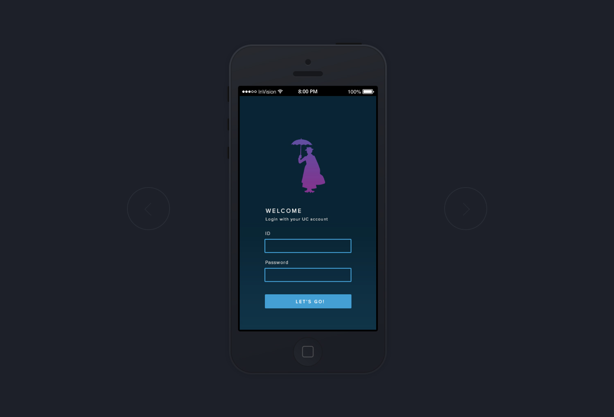

UC Magic: App Development
Year 3 University Project
The project
The academic success of a student is often based on the strength of their support network. This project required the development of an app for University of Canberra students, and needed to support them throughout their first year of study. The app prototype ‘UC Magic,’ addresses the difficulties faced by off-campus students. These students have limited exposure to the university community and may not form friendships as easily as their on-campus peers. The prototype allows students to engage in open, inclusive conversations. These conversations can range from finding a study group to making friends and social events. Without needing an invitation or have existing connections, off-campus students can bypass the challenging social environment they face. They’re able to engage with the community by forming positive connections online. These connections then develop into supportive friendships through meet‑ups and face-to-face conversations. The goal of the product is to provide students with the ability to easily build their own support network.

{kind=link}
{kind=link}
{kind=link}
{kind=link}
{kind=link}